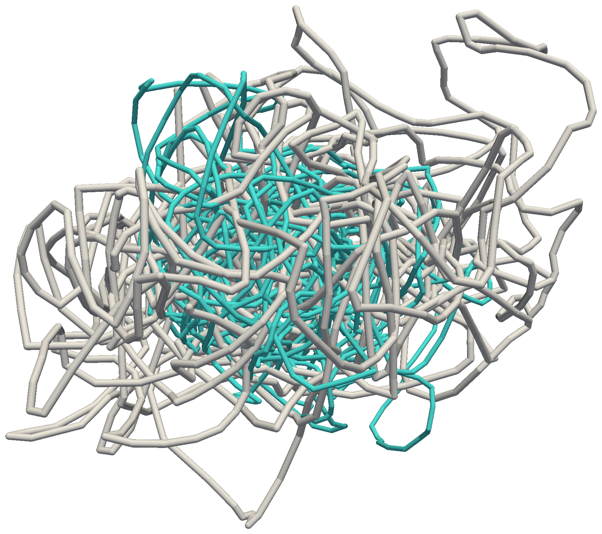

Hypergraph learning
Ranking enhancers for each promoter
A multiway chromatin contact records which loci occur together. Can that extra context help identify candidate enhancers for a promoter?
Read project profileI’m a bioinformatics engineer at Shenzhen Bay Laboratory. I study how enhancers find their target genes by bringing chromatin contacts and DNA sequence into the same analysis.

A multiway chromatin contact records which loci occur together. Can that extra context help identify candidate enhancers for a promoter?
Read project profileDoes a sequence model predict a change in RNA signal near a candidate regulatory interval at MYB?
Read project profileCan a flow-based model refine enhancer–gene scores when most candidate pairs have little supporting evidence?
Read project profileHow does chromosome 13 occupy space in AT2D0 and AT1 cells, and what changes when the contacts are modeled in three dimensions?
Read project profileMy background is in biological sciences and biomedicine. At Shenzhen Bay Laboratory, I built pipelines for chromatin contact analysis, 3D reconstruction and molecular simulation. I use multiway chromatin contacts to study which enhancers may regulate a given promoter.
I use Python and R for analysis and Nextflow and Snakemake to make sequencing workflows reproducible.
For questions about the project profiles or research opportunities in computational biology and machine learning, email me at mlfa16@126.com.